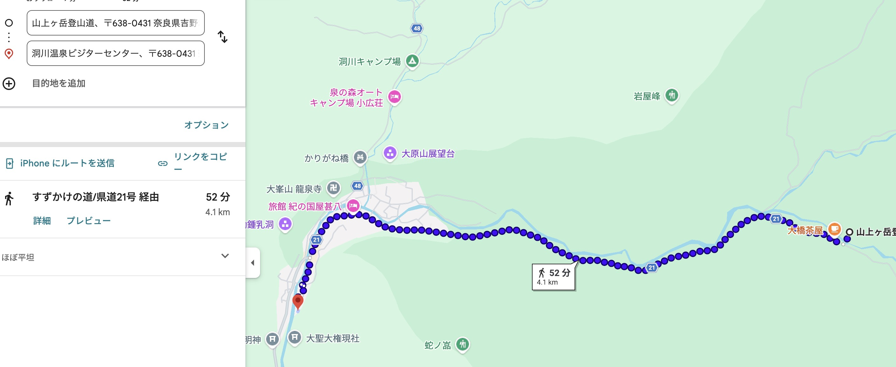

DAY 1 / 7.28
地球46億年を、4.6kmで歩く
女人結界門から歩きはじめ、山上川沿いの遊歩道、母公堂、かじかの滝、岩屋、蛇之倉七尾山をめぐります。
ゴールは洞川小中学校跡のグラウンド。空を見上げながら、歩いてきた時間を静かに振り返ります。

Invitation
これは正式な申込ページではありません。かおるから、大切な友人へ先にお知らせするための小さな案内です。
2026年7月28日・29日、奈良県天川村の洞川で、Way of Life「いのちの巡礼」をひらく予定です。
宇宙138億年、地球46億年の物語を、天川村の水、森、岩屋、祈りの場をめぐる歩みに重ねていきます。
正式な募集や申込方法は、後日あらためてお届けします。まずは「この2日間、少し心に置いておいてもらえたら」というお知らせです。
Tenkawa
Two Days
女人結界門から歩きはじめ、山上川沿いの遊歩道、母公堂、かじかの滝、岩屋、蛇之倉七尾山をめぐります。
ゴールは洞川小中学校跡のグラウンド。空を見上げながら、歩いてきた時間を静かに振り返ります。

1日目に外で受け取ったものを、自分の内側へ戻していく時間です。
静かに感じ、言葉にし、これからの生き方の中にある「変わらない北極星」を見つめます。
Course

For You
忙しい毎日の中で、自分の声が少し遠くなっている人へ。
自然の中で深く息をしたい人。水や森に触れながら、言葉になる前の感覚を取り戻したい人。
誰かのために頑張ってきた身体を、少し休ませたい人。自分の命が、もっと大きな流れの中にあることを思い出したい人。
この旅は、強くなるためというより、やさしく還っていくための時間になると思います。

Information

Night
歩いたあとの身体を温泉でほどき、洞川の夜の灯りの中で、ゆっくり余韻を味わう時間も大切にしたいと思っています。
宿泊や懇親の詳細は、正式案内の中であらためてお知らせします。

From Kaoru
天川村で暮らし、この場所の水、森、人、祈りに触れながら、場が人をひらいていく瞬間を見てきました。
今回のWay of Lifeは、僕にとっても「天川村でしかできない」と感じている時間です。正式な案内の前に、まず大切な人にだけ、日程をお知らせさせてください。
場のコーチングを見る